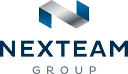

Guilhem SCHLOSSER🖶
Administrateur Systèmes et réseaux, DevOps - Profil Junior
Postes occupés

Collège Pablo Picasso - 31270 Frouzins
GESTIONNAIRE DE PARC
janvier 2008 à janvier 2009
Dans le cadre d'un CAE
- Support utilisateur / résolution d’incident / divers.
- Maintenance du parc informatique/ Hardware / Système et software.
- Recherche de solution Open Source pour les enseignants.
- Cartographie du parc informatique.
- Configuration et sécurisation de box internet (FAI)
ENVIRONNEMENT TECHNIQUE :
- Windows 98 & Vista / Serveur Windows 2002
ENVIRONNEMENT TECHNIQUE :

EUROFINS AMATSIGROUP SAS - 31470 Fontenilles
TECHNICIEN SUPPORT IT
Février à Mars 2022
Mission d'intérim
- Masterisation de poste via SCCM (PXE) ou Windows LPE.
- Récupération de donnée utilisateurs et messagerie.
- Restauration des données utilisateurs sur le nouvel environnement de travail.
- Ajout des imprimantes réseau.
- Brassage de baie.
- Rédaction de la procédure de migration et listing d’inventaire Excel.
- Sensibilisation aux risques cyber et à l’utilisation d’un gestionnaire de mot de passe, rédaction de procédure.
- Assistance aux utilisateurs (nouvel environnement TSE).
- Upgrade et mises à jour de deux serveur Dell PowerEdge R720 et 2950.
- Installation de ESXI.
- Support utilisateur.
Stages

ITRUST - 31100 Toulouse
ANALYSTE SOC NIV 1
Novembre 2021
Apprentissage dans le cadre de la 2eme année de Master Expert Réseau Infrastructure et sécurité.
- Run IKARE (vérification de l’espace disque et mémoire disponible sur les serveurs clients).
- Mise en place de serveur Bind9 (virtualisé sur infrastructure personnelle Proxmox), afin de valider la configuration pour la mise place d'une redondance au niveau du serveur DNS de l’Entreprise.
- Daily meeting de Run.
ENVIRONNEMENT TECHNIQUE :
- Debian, Serveur client Linux (remote access via SSH).

SCASSI - 31670 Labège
CHEF DE PROJET / AMOA
D’avril à juillet 2021
Stage dans le cadre de la 1ere année de Master Expert Réseau Infrastructure et sécurité.
- Expression des besoins et rédaction d’un cahier des charges.
- Traitement des lots et évaluation de la charge de travail.
- Mise en place d’une infrastructure miroir virtualisé (Proxmox).
- Étude de la solution Azure-AD.
- Création d’un script PowerShell permettant l’ajout du suffixe UPN et la modification de l’UPN de l’ensemble des comptes de l’annuaire on-premise.
- Test par OK / KO afin de mettre en évidence les attendus et exigences fonctionnelles.
- Réévaluation de la charge de travail.
- Réalisation d’un documentation méthodologique et technique de mise en œuvre.
Projet clôturé avec succès en trois mois, la réconciliation des comptes locaux et cloud est effective.
ENVIRONNEMENT TECHNIQUE :
- En distanciel avec un jour par semaine en présentiel.

MAIRIE - 31470 Fonsorbes
TECHNICIEN SUPERIEUR SYSTEME ET RESEAU
Décembre 2018 puis Avril 2020
Dans le cadre du projet de reconversion professionnelle (POI) et Titre RNCP de niveau V
- Expression des besoins et rédaction d’un cahier des charges.
- Support de proximité / Helpdesk pour les différents services de la Mairie.
- Helpdesk pour les services dépendant de la Mairie.
- Configuration de poste
- Récupération de données utilisateur, Upgrade système, migration
- Création de procédures diverses
- Configuration et sécurisation de box internet (FAI)
- Maintien en condition de l’infrastructure.
- Aide à la migration de la messagerie vers Office365, récupération de données.
- Mise en place des équipements et vérification de brassage réseau, du Tiers Lieu de la commune.
- Rédaction de procédure diverses.
- Migration, récupération et reconditionnement de poste utilisateurs.
- Création d’un script PowerShell pour la suppression de fichier vieux de X jour et non modifié depuis X jours, sur le serveur de stockage.
- Sensibilisation du personnel aux bonnes pratiques (utilisation d’un gestionnaire de mot de passe)
ENVIRONNEMENT TECHNIQUE :
- Windows Serveur / Hyper-V
ENVIRONNEMENT TECHNIQUE :